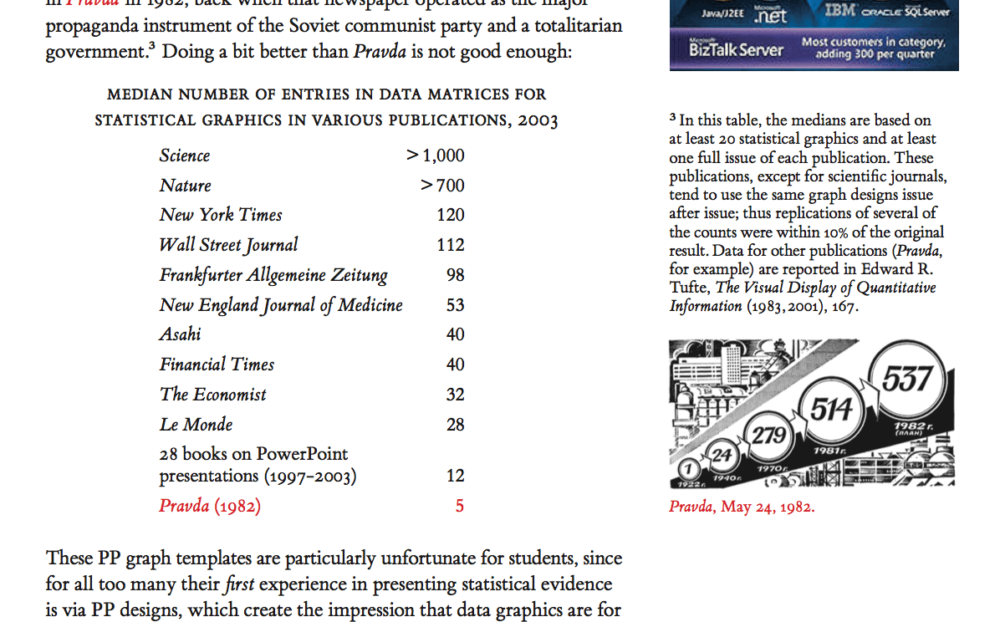

Rant 06
Placeholder short-form complaint number 06 for testing the rant page
- 3 minutes read
- #rant
- #placeholder
- #06
- Published on February 27, 2026.
- Last revised on February 27, 2026.
A bad interface can turn even a good opinion into tedious labor.
Premise
Rant 06 keeps the pattern going with a very compact page. It is useful because short entries are the quickest way to discover whether spacing starts collapsing under pressure.
If the page still breathes here, it will probably hold up well once real copy arrives. The interesting question is what happens when even a short complaint wants a figure and one small side remark.
Exit Line
Mock irritation can be minimal and still teach us a lot about the page.
One Example
A single image can turn a brisk complaint into something that feels slightly more considered.
 A deliberately strange margin image, because a rant may not always choose its supporting evidence with perfect restraint.
The trick is to let that extra material enrich the page without slowing it down too much.
A deliberately strange margin image, because a rant may not always choose its supporting evidence with perfect restraint.
The trick is to let that extra material enrich the page without slowing it down too much.

Small Snippet
static int penalty_for_jank(int frames_stalled)
{
if (frames_stalled <= 1)
return 0;
return (frames_stalled - 1) * 5;
}A tiny code block like this is enough to test whether rants can support technical examples without accidentally turning into full posts.